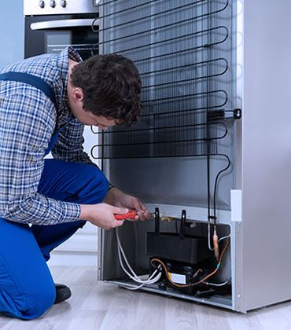
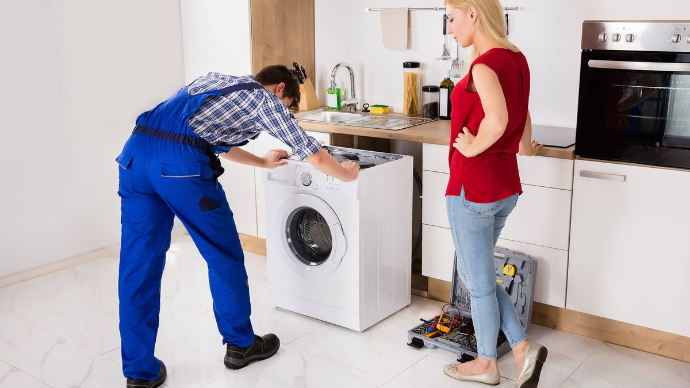

Not CoolingFridge & Freezer Repairs
Side-by-side, double-door and built-in fridges: thermostats, fans, defrost systems, door seals and gas regassing carried out on-site.
- Cooling & defrost faults
- Leaks and noisy motors
On-site fridge, washing machine, tumble dryer and dishwasher repairs across Sandton, Bryanston, Morningside, Rivonia and Fourways, with genuine parts and a 6-month written warranty.
Technicians on standby near you
Sandton households run on their appliances. From family homes in Bryanston and Lonehill to apartments and townhouse complexes around Sandown and Morningside, a fridge that stops cooling or a washing machine that won't drain disrupts the whole day.
Eazy Appliance Repairs stations mobile vans close to Sandton so a certified technician can reach you quickly, diagnose the fault on the spot and give you a fixed quote before any work begins. Most repairs are completed in a single visit.
Mobile units are stationed close to Sandton for quick, same-day repairs. Typical arrival is 30–45 mins.
Bryanston, Morningside
Rivonia, Sandown
Sunninghill, Woodmead
Fourways, Lonehill
Our vans carry the common spare parts for these appliances, so most Sandton repairs are finished on the first visit. We also repair dishwashers.

Not CoolingSide-by-side, double-door and built-in fridges: thermostats, fans, defrost systems, door seals and gas regassing carried out on-site.
 Drain & Spin
Drain & Spin
Front-loaders and top-loaders: blocked pumps, snapped belts, worn bearings, door locks and electronic control faults.

No HeatVented, condenser and heat-pump dryers: elements, thermostats, thermal fuses, belts and drum rollers replaced on the day.
Small details that make your repair visit smoother and quicker.
Many Sandton complexes and estates require visitor registration at the gate. Give us your unit number and a gate contact when you book so your technician isn't held up at the boom.
Integrated dishwashers and built-in fridges often need panels removed before they can be tested. Tell us the brand and model when booking so the right parts are on the van.
Larger households put washers and dryers through more cycles, which wears drain pumps, belts and bearings faster. A prompt repair usually costs far less than waiting for a complete failure.
From booking to a repaired appliance in Sandton: three simple, transparent steps.
Book online or call our desk. The nearest Sandton mobile van is dispatched to your address.
Your certified technician tests the appliance and gives you a clear fixed quote before work begins.
Repairs are completed on the spot with genuine parts and covered by our written 6-month guarantee.
Speak directly with our duty supervisor or request an urgent callback. Our mobile vans are on standby for Sandton and surrounding suburbs.
Fill in your details below and a technician will call you back within 15 minutes.
Quick answers about our on-site repair service in Sandton and surrounding suburbs.
We stage vans close to Sandton, so for urgent bookings made before 12:00 PM we typically dispatch a technician within 30 to 45 minutes for same-day service. Arrival times can vary with traffic and the day's call volume.
Your technician inspects the appliance, identifies the fault and gives you a fixed quote. If you go ahead with the repair, the initial diagnostic inspection fee is waived. Most repairs are completed in the same visit.
We repair Samsung, LG, Bosch, Smeg, AEG, Whirlpool, Defy and Speed Queen, using genuine factory-original parts, and every repair is backed by our written 6-month parts and labor warranty.